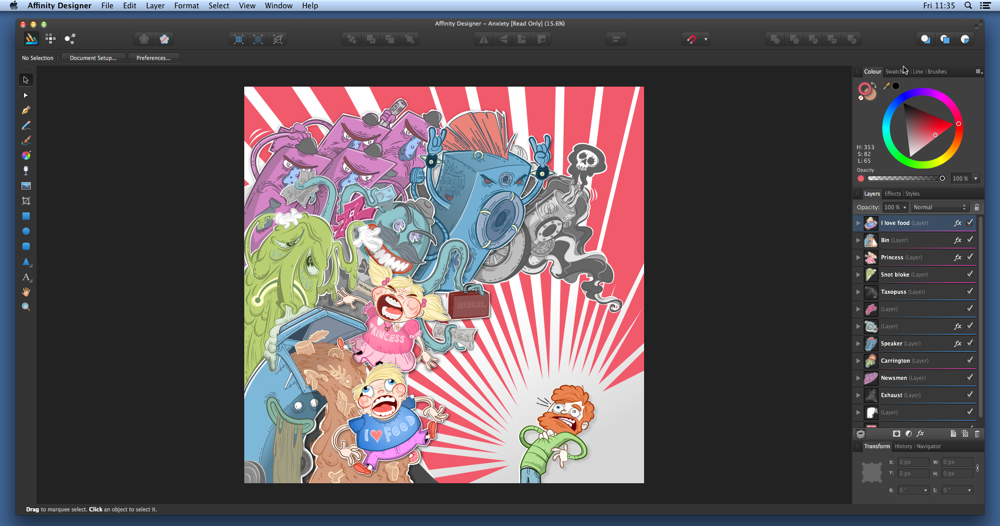
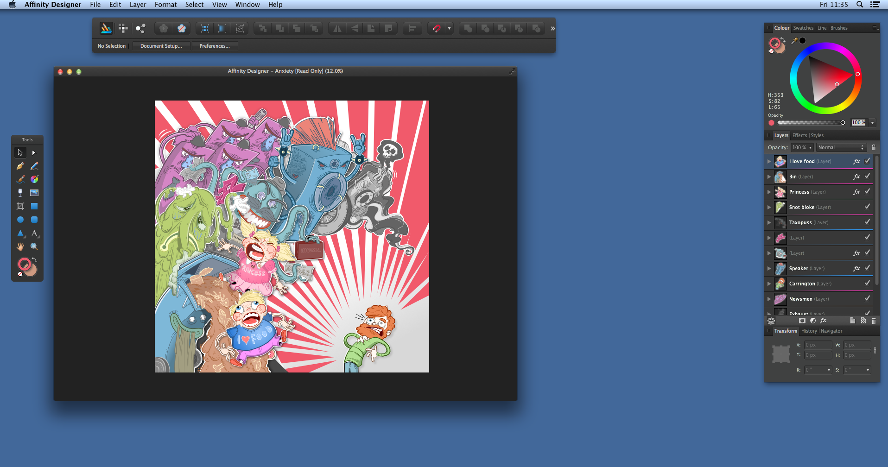

Каждый пользователь имеет собственные предпочтения в работе. С учетом этого в программе Affinity Designer предлагается два разных режима на выбор: обычный режим и плавающий режим. Макет рабочей области в каждом режиме можно настраивать с учетом индивидуальных потребностей. Это особенно полезно, поскольку в разных режимах используются разные панели.
Программа Affinity Designer предлагает режим представления в окне и развернутый режим.
При первом запуске программы Affinity Designer она открывается в обычном режиме (одно окно). Это означает, что все панели и окно просмотра будут скреплены между собой, а все элементы управления будут находиться под рукой, где их можно легко найти.

Плавающий режим не имеет ограничивающей рамки. Панели (или группы панелей) и панели инструментов свободно перемещаются, а каждый открытый документ имеет собственное представление, однако при этом сохраняется возможность создавать группы. Это может быть особенно полезно, если используется несколько экранов, поскольку это позволяет максимально расширить рабочую область. Это также означает, что можно работать над одним документом и одновременно с этим сохранять открытыми дублирующие представления.

Вне зависимости от выбранного макета и режима работы пользователи могут также перейти в полноэкранный режим просмотра. В этом режиме программа Affinity Designer выбирает максимальный эффективный масштаб рабочего стола, позволяя пользователю работать с каждым доступным пикселем. В плавающем режиме рабочей области можно работать над несколькими документами одновременно, каждый из которых будет иметь собственный рабочий стол в полноэкранном режиме.
При первом запуске программы Affinity Designer она открывается в окне, которое занимает приблизительно три четверти экрана. Изменить размер окна можно в любой момент.
В развернутом режиме программа Affinity Designer занимает все доступное пространство экрана, кроме области панели инструментов в нижней части экрана.
Выполните одно из перечисленных ниже действий.
Выполните одно из перечисленных ниже действий.
При переключении обратно в режим представления в окне размер окна возвращается к исходному размеру до переключения в развернутый режим.